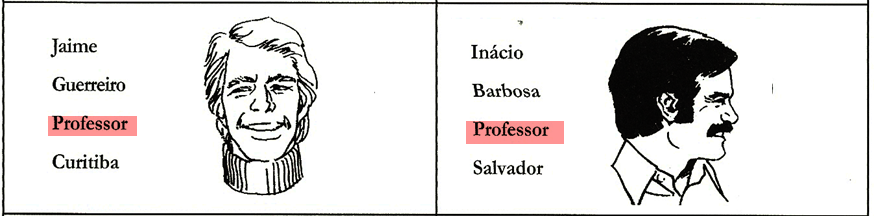
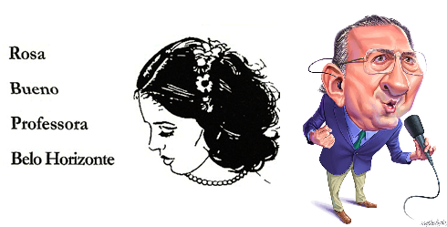
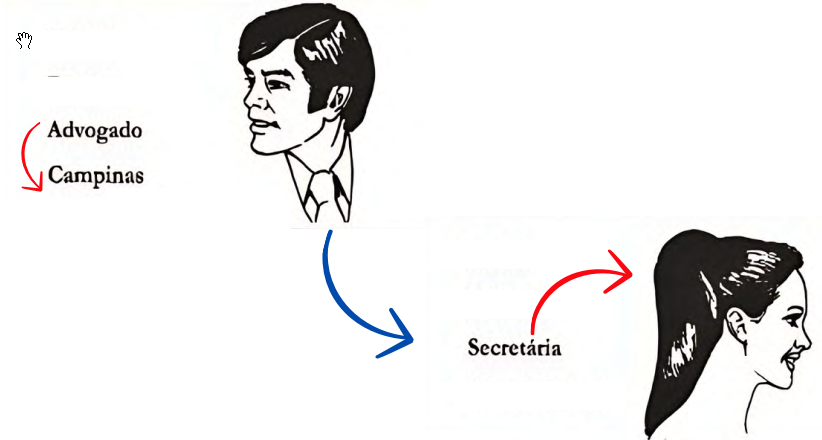
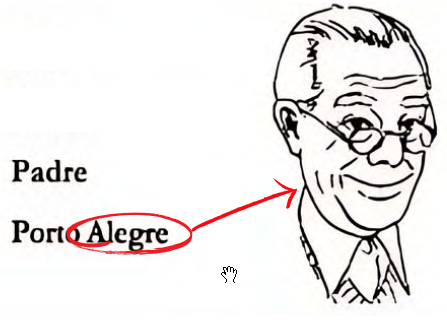

Testes de Memória
Aprovação Psycho – Técnicas e Estratégias
Os testes de memória avaliam a capacidade de retenção e evocação de informações visuais ou verbais. São fundamentais para aferir a capacidade do candidato de armazenar instruções e detalhes operacionais.
2 TMR - Teste de Memória de Reconhecimento
O TMR (Teste de Memória de Reconhecimento) investiga o funcionamento da memória baseada em familiaridade e lembrança. A tarefa envolve figuras geométricas coloridas que devem ser memorizadas e, posteriormente, reconhecidas entre diversos estímulos distratores.
Exemplo de item do TMR
Características Principais
Anular erro
Se, por acaso, riscar errado, basta completar o "X" sobre a figura para anular a marcação.
Sem descontos
Erros e omissões não são descontados da pontuação.
CUIDADO! Protocolo Inválido
"Se o número de erros for igual ou superior ao número de acertos, pode ser indicativo de protocolo inválido (chute)."
Se você marcar TODAS as figuras, terá acertos máximos, mas também erros máximos. O psicólogo invalidará o teste.
Página de Memorização
Páginas de Resposta
As páginas de resposta estão dispostas lado a lado, como um caderno aberto.
Estratégias e Dicas
Dica 1: Posição Geométrica
Memorize a posição das figuras corretas. Em cada linha de 5 figuras, o gabarito segue o padrão:
- Linha 1: 3, 5
- Linha 2: 2, 3, 5
- Linha 3: 1, 4
- Linha 4: 2, 4, 5

Dica 2: Traçado Mental
Visualize linhas imaginárias (garfo, seta, sinal de menos) conectando as figuras corretas.

3 TEM-R-2 - Teste de Memória de Reconhecimento
O TEM-R-2 possibilita realizar uma avaliação da memória de reconhecimento. Para tal finalidade, são oferecidas figuras e palavras para memorização, solicitando posteriormente que o examinando assinale os estímulos lembrados.
Características Principais
Regras de Pontuação
- Algumas figuras valem 2 pontos.
- Outras figuras valem 1 ponto.
- Cada erro desconta 3 pontos.
Página de Memorização

Página de Resposta

Estratégias e Dicas
Dica: Sequência Numérica 753-413
Marque os itens por coluna seguindo a numeração:
- Coluna 1: Marque 7 itens
- Coluna 2: Marque 5 itens (de cima para baixo)
- Coluna 3: Marque 3 itens
- Coluna 4: Não marcar nada
- Coluna 5: Marque 4 itens
- Coluna 6: Marque 1 item
- Coluna 7: Marque 3 itens
4 TEPIC-M - Teste Pictórico de Memória
O TEPIC-M é um instrumento psicológico que avalia a memória visual de curto prazo usando figuras simples (como casa, balão, avião). É comum em concursos públicos, especialmente policiais, para verificar a capacidade de memorizar e reproduzir rapidamente informações visuais após um curto período de exposição.
Características Principais
Atenção à Correção
- Quando a pessoa escreve pescador, é atribuído o ponto apenas ao
pescador; não é subentendido que a vara de pescar e linha foram percebidas pelo
respondente.
- O mesmo vale para a palavra barco ou navio. Não se pontua a palavra vela se ela não foi escrita.
- Quando aparece a palavra pessoa em trampolim, pontua-se o trampolim
e a pessoa; mas, quando é colocado apenas trampolim, a pessoa não é pontuada.
- O mesmo vale para o item balão e pessoa em balão.
- No caso de aparecer a palavra paraquedas, pontua-se apenas essa
palavra.
- Quando o indivíduo escreve pessoa em paraquedas são pontuados a pessoa e o paraquedas (2 pontos). No caso de escrever paraquedista é atribuído apenas 1 (um) ponto.
- No caso de aparecer a palavra pessoa de forma isolada, deve-se
prestar atenção para a(s) palavra(s) anterior(es) para verificar qual item deve ser
pontuado.
- Por exemplo, se a pessoa responder: casa, árvore, carro, pato, trampolim, pessoa, avião, helicóptero, etc., o ponto é atribuído à pessoa que está no trampolim, por se tratar do item mais próximo que a pessoa assinalou.
Imagem de Estudo
Itens para Memorizar
- Água
- Arco-íris
- Árvore
- Avião
- Balanço
- Balão
- Balde
- Barco ou Navio
- Barraca Camping
- Bola
- Cadeira
- Caminho
- Carro (Fusca)
- Casa
- Cesta de Basquete
- Céu
- Chaminé
- Criança
- Deck / Ponte
- Escorregador
- Fogueira
- Foguete
- Fumaça
- Gangorra
- Grama
- Helicóptero
- Janela
- Jet-ski
- Lancha
- Linha da Pipa
- Linha da Vara
- Mesa
- Nuvem
- Onda
- Paraquedas
- Paraquedista
- Parque
- Pássaro
- Pato
- Peixe / Tubarão
- Pescador
- Pessoa em Balão
- Pessoa em Paraquedas
- Pessoa em Trampolim
- Pessoa em Escada
- Pipa / Papagaio
- Poço / Churrasqueira
- Porta
- Prancha
- Rabiola
- Sol
- Surfista
- Terra
- Trampolim
- Toboágua
- Vara de Pesca
- Vela
5 Memória F - Teste de Memória de Rostos
O Teste de Memória de Rostos (comumente catalogado como Memória F) é um instrumento psicométrico utilizado para avaliar a capacidade do candidato de memorizar fisionomias.
Estrutura:
- 18 pares de faces.
- Dos 18 pares, 9 são repetidos, mudando apenas a posição de postura (frente, perfil à esquerda ou à direita).
Exemplo de item do Memória F
Página de Memorização
Folhas de Resposta (Frente e Verso)
Lado A
Lado B
Características Principais
Atenção à Correção
- Pontuação: acertos - (erros/2). Ou seja, a cada duas erradas elimina uma correta.
- A forma correta de marcar é com um X.
- Ao perceber que errou, o candidato deve pintar toda a bolinha ⚫, para anular o erro.
Estratégias e Dicas
Dica 1: Posição Geométrica
Memorize a o gabarito pela posição das figuras corretas. Primeiro devemos entender que em cada linha há 8 figuras. Vamos contar da borda da página para o centro em ambas as páginas.
O gabarito será (em ambas as páginas):
- Linha 1: 3 5 6
- Linha 2: 2 5 7
- Linha 3: 2 8
- Linha 4: 3 8
- Linha 5: 2 6
- Linha 6: 2 6
Dica 2: Traçado Mental
Memorizar mentalmente as linhas em que cada vértice corresponde a uma figura correta. Lembre-se que não pode riscar o caderno no dia da prova. Deve-se ter esse traçado mentalmente.

6 TSP Memória
O TSP Memória é um teste psicotécnico difícil, parte da Bateria TSP, que avalia a capacidade de reter e evocar nomes e fisionomias, crucial em concursos policiais.
Envolve a memorização de 16 pares rosto-nome e posterior identificação em um grupo maior, exigindo foco em detalhes visuais e estratégias de associação.
Como Funciona
-
1. Fase de Memorização (2 min)
Você tem cerca de 2 minutos para ver e decorar 16 fotos de pessoas com seus respectivos nomes.

-
2. Fase de Associação (3 min)
Identificar essas mesmas pessoas (ou indicar "não encontrado") em um conjunto de 36 imagens.

Página 1

Página 2
Características Principais
Pontuação e Regras
- 36 itens corretos: valem 1 ponto cada.
- 20 itens "não encontrado": valem 2 pontos cada (Total 40 pontos).
- Erros e omissões: Não são descontados.
- Atenção: Não risque as figuras no teste, apenas indique o número correto no gabarito lateral.
Estratégia Vencedora
Foco nos "Não Encontrados"
A estratégia é garantir os 40 pontos das questões "Não foi mostrado" e depois acertar pelo menos 6 nomes das 16 figuras memorizadas.
+ 6 acertos nominais = 46 pontos (Meta Atingida)
Dica: Sequência Numérica
Para acertar o gabarito das questões de 1 ponto na segunda página, memorize a sequência numérica: 24 13 13 21.
É importante atentar-se para o espaçamento entre os números.
Veja como deve ficar:
7
MVR - Memória Visual de Rostos
Desfavorável pelo SATEPSI
O Teste MVR (Memória Visual de Rostos) é um exame psicotécnico que avalia a capacidade de memorizar rostos e informações associadas (nome, profissão, cidade) em curto prazo, com aplicação de uma ficha para memorização e outra com perguntas para reconhecimento, exigindo concentração, calma e técnicas de memorização.
Aplicação
O candidato vê uma ficha com 12 rostos (6 homens e 6 mulheres), cada um com nome, sobrenome, profissão e cidade. Tendo um tempo de 4 minutos para memorizar o máximo possível.

Ficha de Memorização
Em seguida, recebe uma folha com perguntas sobre os rostos e informações, devendo responder dentro de outro tempo de 6 minutos, lembrando detalhes como localização e características.
Atenção
Em hipótese nenhuma deve-se responder no próprio teste, portanto responda exclusivamente na folha de resposta onde vão marcar com X em uma dentre as quatro opções para cada questão.

Folha de Resposta (Exemplo)
Atenção 2
Note que o gabarito começa com os exemplos. Tome cuidado com isso para não confundir e começar a marcar a sequência das questões como se o primeiro item fosse a primeira questão.
Exemplos
E1. A pessoa apresentada no quadro à direita...
- A. estava na primeira linha de rostos da ficha
- B. estava na última linha de rostos da ficha
- C. estava com uma linha no centro da ficha
- D. não estava na ficha (Correta)
E2. A pessoa identificada como Alberto Hering era de ...
- A. Belo Horizonte
- B. Brasília
- C. Blumenau (Correta)
- D. Porto Alegre
E3. Na ficha tinha...
- A. mais homens que mulheres
- B. doze pessoas (Correta)
- C. mais mulheres que homens
- D. dez pessoas
As RESPOSTAS CORRETAS para estes três exemplos são: D, C e B.
Características Principais
Pontuação: acertos - (erros/3). A cada 3 erros elimina uma correta.
Dica 1: Associações Mentais
Vamos memorizar apenas os rostos que serão cobrados nas questões. Serão apenas esses 6:
2. Na primeira coluna tem 3 mulheres;
3. Alexandre de Moraes tem uma psicóloga (mulher);

4. Todo professor é Guerreiro, mas no final do mês só toma em Curitiba;
5. Todo professor trabalha demais... Logo há dois professores, Jaime Guerreiro e Inácio Bigode.
6. A mossa chamada Rosa é filha de Galvão Bueno.
7. Memorize o poema: Jorge Batista eletricista, e em Goiana há uma recepcionista.
8. A nutricionista é a melhor, por isso ela é de primeira linha.
9. O advogado de Campinas usa gravata. Todo advogado tem uma secretária que usa penteado de rabo de cavalo.
10. Em Brasília não tem nutricionista, por isso os deputados são gordos.
11. O Padre está Alegre, mesmo usando óculos de última linha.
Dica 2: Poema Mnemônico
Memorizar esse poema que corresponde ao gabarito das questões:
"Rosa era Buena, sem dúvida, de
coração,
Em Brasília, nutricionista não se encontrava,
De óculos na última linha, sua visão,
Professor Guerreiro em Curitiba,
ensinava."
"Um homem de gravata em Campinas morava,
Secretária com rabo de cavalo, tão distinta,
Na primeira coluna, três mulheres encontrava,
Jorge Batista eletricista, figura tão bem-vinda."
"Nutricionista de primeira linha, Moraes
era mulher,
Em Goiânia, recepcionista, com graça e vigor,
Inácio, bigode, professor a conhecer,
O padre de Porto Alegre, com muito fervor"
Teste Prático
Página 1
1. Escolha a pessoa vista na Ficha de Memorização. Marque sua letra na Folha de Resposta.

2. Escolha a pessoa vista na Ficha de Memorização.

3. Escolha a pessoa vista na Ficha de Memorização.

4. O sobrenome da mulher chamada Rosa era...
- Pinho
- Lourenço
- Bueno
- Nóbrega
5. A pessoa que estava na cidade de Brasília:
- era um homem
- não era nutricionista
- estava na primeira linha
- tinha o sobrenome Nóbrega
6. Havia um homem de óculos...
- na coluna à esquerda
- na última linha
- na primeira linha
- no centro, à direita
7. O professor de sobrenome Guerreiro era de:
- Goiânia
- Curitiba
- Santo André
- Rio de Janeiro
8. Havia um homem de gravata que era ...
- de Campinas
- da primeira linha
- da primeira coluna
- de Campo Grande
9. A mulher penteada com rabo de cavalo...
- era professora
- estava em São Paulo
- era psicóloga
- era secretária
10. Na primeira coluna havia...
- dois homens
- três mulheres
- quatro homens
- duas mulheres
11. A pessoa chamada Jorge Batista era...
- médico
- professor
- padre
- eletricista
Página 2
12. Escolha a pessoa vista na Ficha de Memorização. Marque sua letra na Folha de Resposta.

13. Escolha a pessoa vista na Ficha de Memorização.

14. Escolha a pessoa vista na Ficha de Memorização.

15. A mulher que era nutricionista também era...
- da primeira linha
- de Brasília
- da primeira coluna
- do Rio de Janeiro
19. Na ficha havia...
- duas secretárias
- duas professoras
- duas assistentes social
- dois professores
16. A pessoa com sobrenome Moraes era...
- um médico
- um professor
- uma mulher
- uma assistente social
20. Entre os homens tinha um padre que era de ...
- Curitiba
- Porto Alegre
- Blumenau
- Campo Grande
17. Era de Goiânia...
- Alberto Hering
- uma recepcionista
- uma nutricionista
- um professor
18. A pessoa chamada Inácio Barbosa...
- olhava de frente
- usava gravata
- tinha bigode
- usava óculos
Gabarito
| Questões | Gab | Questões | Gab |
|---|---|---|---|
| E1 | D | E2 | C |
| E3 | B | ||
| 1 | C | 11 | D |
| 2 | D | 12 | D |
| 3 | C | 13 | A |
| 4 | C | 14 | C |
| 5 | B | 15 | A |
| 6 | B | 16 | C |
| 7 | B | 17 | B |
| 8 | A | 18 | C |
| 9 | D | 19 | D |
| 10 | B | 20 | B |